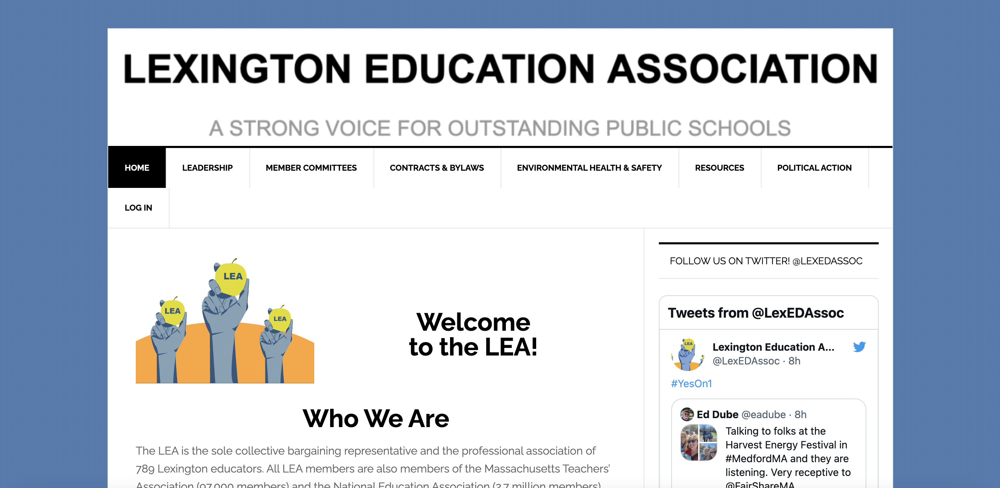
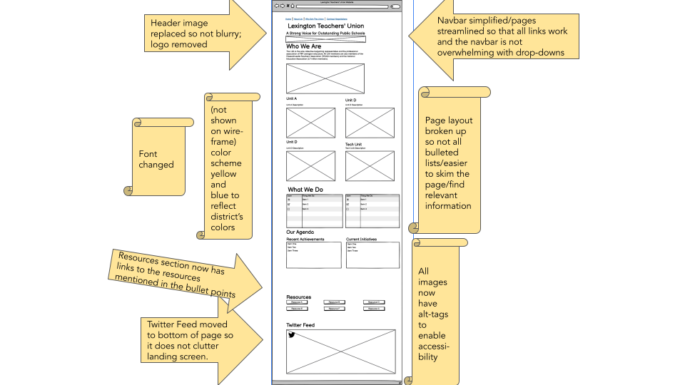
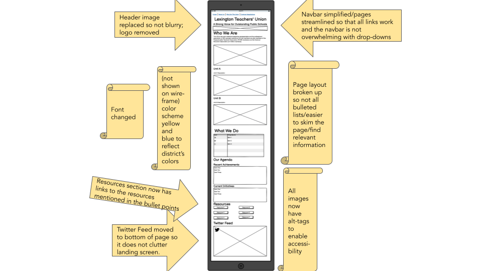
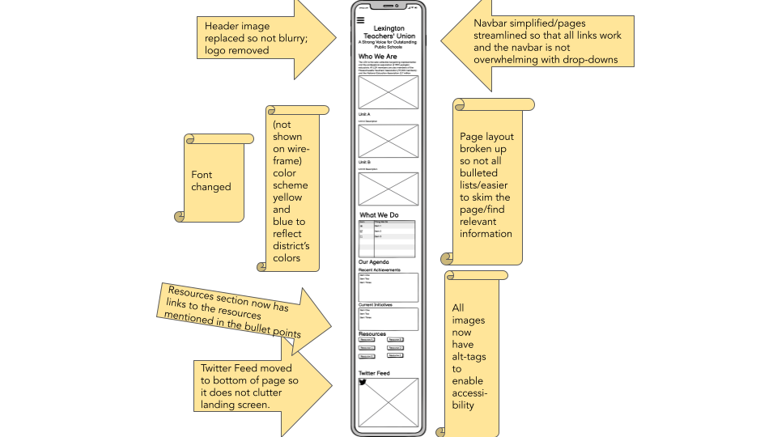
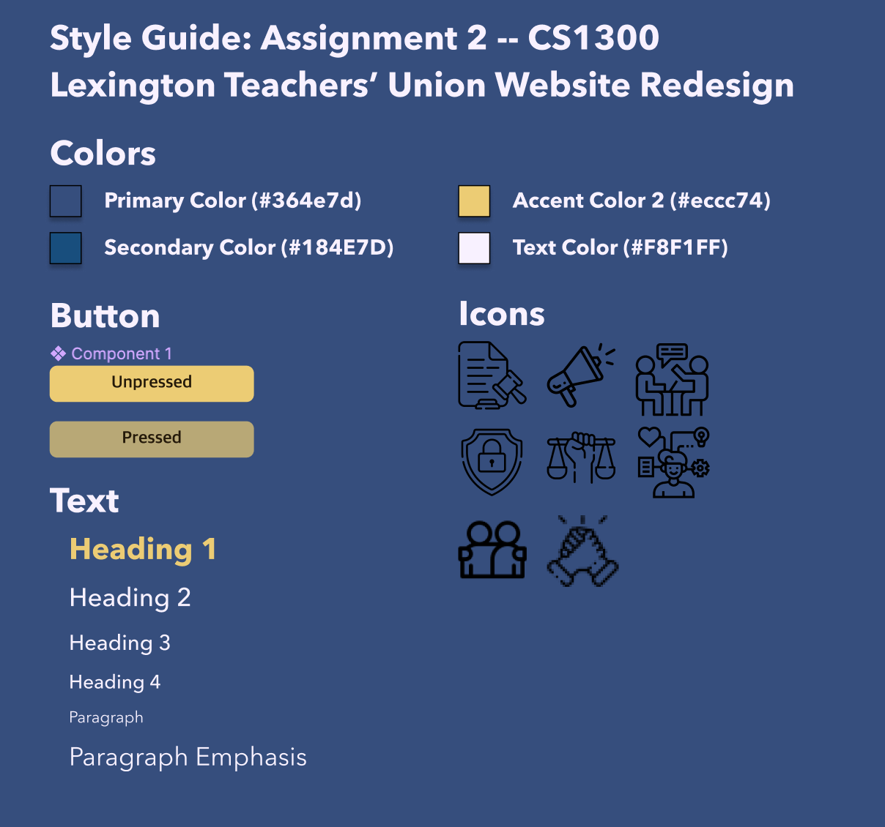
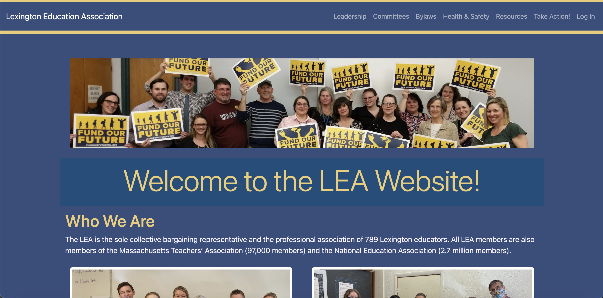
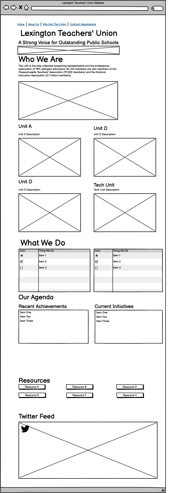

Responsive Redesign - Lexington, MA Teachers' Union Website
Project Description

This website was created for the Responsive Redesign assignment in Brown University's User
Interface/User Experience course.
I chose to recreate this website as it is the website for the teachers' union that my mom belongs to. I
hope that this Redesign
can potentially be implemented on the actual website and can help others learn more about the important
work that the Lexington
Public School Teachers' Union does for its members, their students, and the Lexington, MA community.
View the
original website here!
To create this project, I:
- Analyzed the current usability and accessibility of the website
- Created low-fidelity mockups of the website using wireframes
- Constructed a visual-design style guide for the website, integrating Lexington's colors and mascot into the design.
- Mocked up a high-fidelity prototype of the website using Figma.
- Coded the final website using CSS and HTML.
Usability Problem Identification
- Top header renders in low resolution in some places, and also does not include an image description
- Twitter sidebar confuses reader about where to first look when navigating the page
- Logo positioning at the top of the website makes it hard to tell where relevant information is.
- Hard to differentiate between sections of the website — What we do vs. who we are
- Bulleted lists are very long and hard to skim; hard to parse out information from the list
- Navbar conceptual model makes sense; however clicking some headings takes you to pages while some others are just placeholders that allow drop-downs to appear. Drop-downs are overwhelming.
- Font of headings often hard to read, especially for the character 'W'
- Website’s color scheme does not represent the brand of the union or the school district (blue/yellow)
Accessibility Problem Identification
I found a couple of accessibility problems as well by WebAIM WAVE. I found that the algorithm pointed out some interesting nuances about the webpage, such as the contrast, that I had not previously considered and I believe are incredibly important to fix to ensure people can access the union's important resources. However, I was happy to see that this website, which is used by many, did not have many accessibility problems to begin with, and I did not notice any accessibility concerns that the algorithm did not point out.
Visual Redesign
Lo-Fi Wireframes
To start to redesign the website, I created a low-fidelity wireframe which solved the problems that I had flagged in the 'usability problems identification' and 'accessibility problem identification' sections. I did this for the tablet, desktop, and phone versions of the union website. The problems are labeled on the wireframes below; for higher-resolution versions of the wireframes, please go to the appendix at the bottom of this page.
Desktop Wireframe
Tablet Wireframe
Smartphone Wireframe
Style Guide
I created a style guide for my high-fidelity prototype, which I also used for the responsive redesign as well. The guide is shown below:
Hi-Fi Figma Implementations
After creating my style guide and wireframes, I made high-fidelity prototypes using Figma.
Desktop Figma Prototype
Tablet Figma Prototype
Smartphone Figma Prototype
Responsive Redesign
 Visit the website!Conclusions & Takeaways
- Effective design has the power to not only amplify voices but also provide resources to those who did not know of their existence.
- It is important to keep the mission, branding, and XXX consistent and robust throughout a website redesign.
- Even with the same text, rearranging items, adding a new hierarchy, and adding icons makes a world of a difference in terms of readability and usability.
Appendix
Higher Resoultion Wireframes with no labeling.
